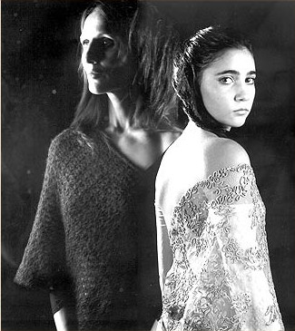
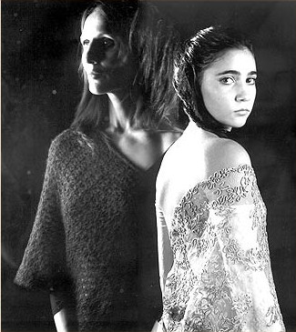

poesía
Participó de talleres literarios coordinados por Virginia Crespo,
Guillermo Del Zotto y Josefina Trebucq.
Trabajó en procesos de seguimiento de obra con los poetas Arturo
Carrera, Victoria Schcolnik y Silvana Franzetti.
En 2006 y 2007 junto al músico Abel Gorosito presentan Latido,
poesías y canciones en movimiento, con poemas de sus libros
Con los pies desnudos,
Hidra y Sirena
y
Fermento.
En 2008, junto a Marisol Farana y Daniela Espinosa crean
Fermento
Poesía + Fotografía x Mujeres
En 2014 junto a Fermín Acosta dirige el video danza Monarcas,
trabajo interdisciplinario que reúne cine, poesía y danza,
seleccionado para los eventos internacionales Corporalidad Expandida y
Festival internacional de Video danza de COCOA, Coreógrafos
Contemporáneos Asociados.
En noviembre de 2018 junto a la poeta Eleonora Requena presentan el
libro
Beber de la sombra del poeta venezolano Víctor Fuenmayor Ruiz
en las Jornadas Internacionales del Ritmo en el Arte JIRA Centro
cultural Recoleta.
En 2017 y 2018, escribió las contratapas de los libros
Desnudos de Carlos Cúccaro y Umbral de Sofía Blando.
En febrero de 2019 se estrena como sal al sol, poesías y
canciones en danza. Propuesta creada y dirigida por Carolina Doartero
de integración de lenguajes: poesía, música y movimiento.
Junto al músico Andrés Hojman y músicos invitados plantean un
recorrido por canciones populares de diferentes culturas: mantras,
klesmer, tango, bolero, fado y composiciones propias.
Las canciones se entraman con poemas de sus cinco libros. El hilo
conductor; “es rizoma o sal al sol, el amor, latido, retorno cantado,
único espasmo”.
www.facebook.com/comosalalsol
www.cafevinilo.com.ar/event/poesias-y-canciones
www.hastatrilce.com.ar/plays/view/500/name:Poesias-y-Canciones
www.pistaurbana.com/espectaculo/como-sal-al-sol-poesias-y-canciones-en-danza/
En abril de 2019 junto a la poeta Anahí Flores lee sus poemas en
“Calíope y Euterpe” ciclo de poesías íntimas y música antigua.
Sus libros
Con los pies desnudos
Dunken, 2001,
Hidra y Sirena
Dunken, 2005,
Fermento
De los cuatro vientos, 2008, fueron presentados en la Feria del Libro
de Buenos Aires y en espacios culturales del interior a través de
performances que integran poesía, música, plástica, danza y
fotografía. Su libro
La fiereza
La luna que, 2012 fue presentado en la Sala Augusto Cortázar de la
Biblioteca Nacional.
Sibila
Ediciones en Danza, 2018, fue presentado en el Centro Cultural
Recoleta y en espacios culturales del interior.
www.centroculturalrecoleta.org/agenda/sibila
Poemas publicados en Blogs literarios:
Otra iglesia es imposible - Blog de Jorge Aulicino
En la casa de mis padres
Internatural - Blog de Edilberto González Trejo
Desiste de la dulzura
Sitiada
Ideograma
Poemas de Sibila
Letralia tierra de letras, la revista de los escritores de habla
hispana.
Poemas de Sibila
Autora Carolina Doartero
C U E R P O E S Í A
Ensamble perfecto de imágenes sonoras que buscan en cada rincón del cuerpo el insondable misterio de uno mismo.
Virginia Crespo de Figalo
No por ser los primeros, son inseguros estos pasos que
Carolina Doartero da sobre la poesía.
Como se ensaya una danza, hasta que un día estalla, así ella
preparó su cuerpoesía. Ante fue pájara, fuego, un animal
innombrable. Juntó hoja seca por hoja seca hasta armar esta
pira. La que despertó el dragón.
Entonces, ella descalzó sus pies para convencernos de que
“lo único cierto es la desnudez”.
Guillermo Del Zotto
Carolina juega con las palabras “uno está allí como un piano que toca solo, un maniquí en un cine o un par de botas al lado del camino” y nos quita de un plumazo años y solemnidades de encima. Baila “para pisar la línea y tirar los huesos del otro lado” y nos permite vislumbrar por un instante al menos esas épocas en las que la poesía se acompañaba siempre de músicas y danzas; los ritos estaban vivos y el hombre se sentía muy cerca de sí mismo. O se deja estar “aspirando hormigas en los rincones” para que no vayamos a olvidarnos de que, como diría Irene Gruss, la poesía puede ser también “un aullido delicado”.
Josefina Trebuq
Hidra y Sirena son míticos seres de agua. La Hidra luchó contra Hércules en al pantano; la Sirena, seducía a los navegantes. Estas polaridades marcan la dialéctica de lo femenino. En poesías, prosa poética y relatos aparecen luces y sombras, dudas y certezas, placer y dolor, ternura y ferocidad. Cada texto y cada ilustración son el intento de un abrazo integrador que busca rozar la unidad a través de toda manifestación de lo dual.
Revista Ñ, 5 junio 2005
Expresividad que desgarra y salva
No es muy frecuente encontrarnos con obras literarias que propongan tan saludable retorno a las fuentes de inocencia primordial de la palabra, esa palabra que es todo pasión, a esa palabra que es noble atavío para el ajedrez verbal que entablan la autora y el lector, hasta arribar al descubrimiento, siempre límpido y -a la vez- siempre mágico, de la belleza. Más allá de las formas, de lo poético o de lo narrativo, el denominador común de Hidra y Sirena, es la conjunción extrema de la expresividad en una dirección interior que desgarra y salva. La lectura de este libro ha poblado mi silencio de imágenes. Ha cumplido su destino circular de desesperación y ensueño.
Carlos Cúccaro
Los textos de Carolina y los dibujos de Malena conviven dentro de un mismo refugio e invitan a compartir la intimidad de esta unión tan profunda como valiente.
Daniel Fitte
 

Ilustraciones Malena Lago
Palabra despojada, que emana de la herida abierta que guía y educa nuestros sentimientos, que amplifica sensaciones y las deja recorrer por el ser. Poesía que nos posee es lo que nos ofrece este maravilloso libro.
Revista Ñ, 19 de julio 2008
En pocas palabras
Tras Con los pies desnudos (2001) e Hidra y sirena (2005), la bailarina y poeta Carolina Doartero publica este libro de poemas mínimos sobre la geometría de los cuerpos y los sueños. Una búsqueda de las mieles del fermento.
Revista Ñ, 26 de julio de 2008
El mágico arte de nombrar Ver más
Cuando el acto de nombrar se vuelve mágico y bello estamos ante la verdadera poesía. Al igual que en "Hidra y Sirena", el anterior trabajo de Carolina Doartero, la gramática danza. "Fermento", su nuevo poemario, es un libro hecho de territorios superpuestos
Carlos Cúccaro
Fotografía Marisol Farana
Con pie firme, Carolina Doartero comparece en el sagrado
territorio de la poesía.
Desde allí imprime rupturas donde aventurar la palabra
elegida tiene en La Fiereza autoridad para lo dicho.
Expuesta a padecimiento y resurrección, traza improntas como
vértebras de su pasadizo notable.
Entre la penumbra que fija ese destino marcado en la palma
de la mano, el punto de partida procura la intimidad del
susurro y la pasión de una voz en alto.
El reto a duelo con sus temas, la veladura y la
transparencia desarropan señales, así el poema naturaliza la
orilla deseada para una nueva concepción del abordaje.
Entonces, recomienza lo que ha quedado huérfano con
pulsaciones de lúcida militancia en un idioma que ya le es
propio.
Roberto Glorioso
La fuerza del desgarro sutil Ver más
En su cuarto poemario, según palabras del poeta Roberto Glorioso, Carolina Doartero "recomienza lo que ha quedado huérfano con pulsaciones de lúcida militancia en un idioma que ya le es propio". Esta frase no sólo es certera por su belleza, sino porque además despliega un mapa de lectura que desde la contratapa predispone al lector de "La fiereza" a una sorprendente continuidad de un estilo.
Guillermo Del Zotto
Presentación en la Biblioteca Nacional
Se refirieron al libro los escritores María Inés Krimer,
Ricardo Rubio y Roberto Glorioso.
Lectura de los poemas, María Pía Pillonetto.
Sala Augusto Cortázar.
Abrimos el libro de Carolina Doartero y vemos que está
dividido en dos secciones: la primera, “el fuego” y la
segunda, “el agua”. Fuego y agua: dos de los cuatro
elementos –livianos y pesados— que, según una doctrina de la
Antigüedad y la Edad Media, constituían, al combinarse entre
ellos en grados y proporciones diferentes, el origen de
todos los seres en el mundo. La tierra y el aire (que no
tienen secciones propias, pero se manifiestan internamente
en los poemas) completaban el milagroso cuarteto.
La base material de la vida y sus metamorfosis posibles por
medio del elemento ígneo; lo líquido y lo ardiente; lo que
fluye y lo que destruye pero también renueva: este es el
arco comprendido por los poemas del libro, que “viven entre
la materia y el espíritu”.
Cada una de las dos secciones se abre con un poema en el que
un personaje (similar a una sibila) hace pronunciamientos
con solemne tono profético. El hombre enjaulado, en el
primer poema, afirma sentencioso que “todo cambio en la
materia / empieza por el fuego”. Otra voz (¿del mismo hombre
en la jaula?), en el poema de apertura de la segunda
sección, enuncia que “El fundamento / de la vida / es el
agua”.
Fuego y agua, dos elementos opuestos, aquí se vuelven
complementarios. Coincidentia oppositorum: ¿regirá este
principio todo el libro?, nos preguntamos. El epígrafe de la
colección, tomado de la “Oda a la Melancolía” (1819) del
poeta romántico John Keats, parece confirmarlo: “Ay, in the
very temple of Delight / Veil’d Melancholy has her sovran
shrine”. Deleite y melancolía como las dos fases de una
misma experiencia, que la poeta siente y advierte
subyacentes en la vida. Como el agua y el fuego, estos otros
dos elementos opuestos (pero, a la vez, paradójicamente
complementarios) habitan un mismo templo, como afirma Keats.
Fragmento del prólogo de Fabián Iriarte
Presentación en el Centro Cultural Recoleta
Se refirieron al libro los poetas Javier Cófreces, editor de
Ediciones en Danza, Fabián Iriarte, autor del prólogo,
Victoria Schcolnik y Eleonora Requena.
Participaron el músico Claudio Pedreira y María Pía
Pillonetto en la lectura de poemas.